1.3.2 Questionário
Introdução
Durante o processo de levantamento de requisitos do sistema, foi utilizada a técnica de Questionário como uma das formas de elicitação. Essa técnica tem como principal objetivo coletar informações de forma estruturada, permitindo alcançar um número maior de participantes e obter dados quantitativos e qualitativos sobre as necessidades, preferências e expectativas dos usuários.
Objetivo
O objetivo deste questionário é identificar os principais requisitos que os usuários esperam no contexto de uso da solução proposta, de forma a guiar o desenvolvimento das funcionalidades do sistema e garantir que ele atenda às reais necessidades do público-alvo. Além disso, reutilizaremos para definir o perfil de usuário.
O questionário foi destinado a alunos, professores, técnicos administrativos e colaboradores terceirizados da Faculdade de Ciências e Tecnologias do Gama (FCTE). Esse público representa diretamente os usuários da futura aplicação e permite compreender necessidades específicas do ambiente acadêmico.
Metodologia da Aplicação
Forma de aplicação: Google Forms
Número de perguntas: 09 perguntas
Tipo de perguntas: múltipla escolha e abertas
Número de respondentes: 22
Termo de Consentimento: Você está sendo convidado(a) a participar, de forma voluntária, da presente pesquisa, que tem como objetivo levantar o perfil dos usuários da comunidade FCTE para o desenvolvimento do projeto FCTEdesapega – uma plataforma para doação, troca ou venda de itens usados. A participação consiste em responder um questionário, com duração aproximada de 5 a 10 minutos. As respostas são anônimas e os dados coletados serão utilizados exclusivamente para fins acadêmicos, sendo tratados com sigilo e confidencialidade. Você poderá desistir da participação a qualquer momento, sem qualquer prejuízo. Ao prosseguir e responder ao questionário, você declara que leu e compreendeu as informações acima e concorda em participar da pesquisa.
Questionário
Tabela 1: Estrutura do Questionário – FCTE Desapega
| Seção | Pergunta | Opções de Resposta |
|---|---|---|
| Perfil do Usuário | Qual o seu vínculo com a FCTE? | Técnico(a), Aluno(a), Professor(a), Outro |
| Qual seu curso (ou área de atuação)? | Engenharia Automotiva, Aerospacial, Eletrônica, Energia, Software, Outro | |
| Qual a sua faixa etária? | Menos de 18, 18–24, 25–34, 35–44, 45 ou mais | |
| Hábitos e Interesse em Desapego | Você costuma doar, trocar ou vender objetos que não utiliza mais? | Não, Sim (raramente), Sim (às vezes), Sim (frequentemente) |
| Que tipo de item você mais se desfaz ou gostaria de se desfazer? | Roupas, Livros, Eletrônicos, Móveis, Outro | |
| Você estaria disposto(a) a utilizar uma plataforma exclusiva da FCTE? | Sim, Talvez, Não | |
| Funcionalidades e Preferências | Qual modelo de negociação mais te interessa? | Doação, Troca, Venda, Todos |
| Que tipo de funcionalidade você gostaria de ver na plataforma? (marcar múltiplas) | Busca por categorias, Chat entre usuários, Avaliação de anunciantes, Notificações, Outro | |
| Tem alguma sugestão ou observação sobre como esse projeto pode ser mais útil pra comunidade FCTE? | Resposta aberta |
Renata Quadros e Gabriel Monteiro, 2025.
Respostas
| Resposta 1 | Resposta 2 |
|---|---|
| 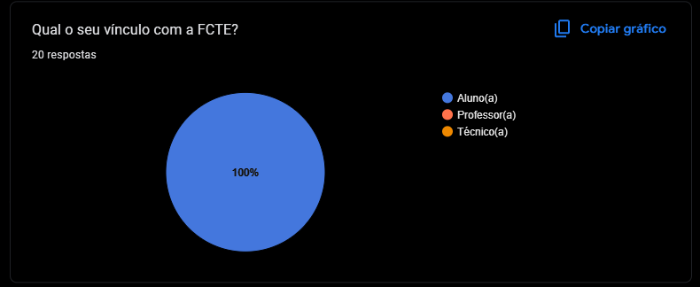 | 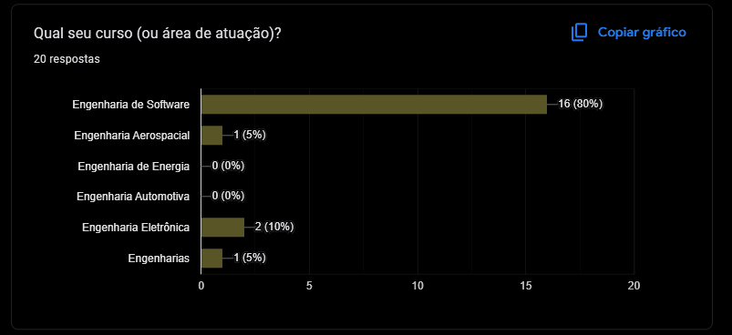 |
| Resposta 3 | Resposta 4 |
|---|---|
| 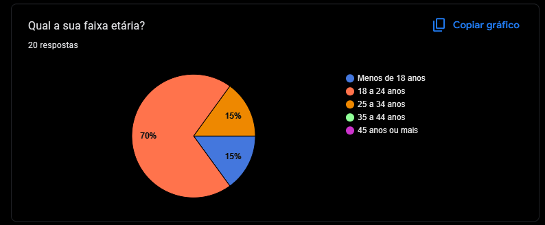 | 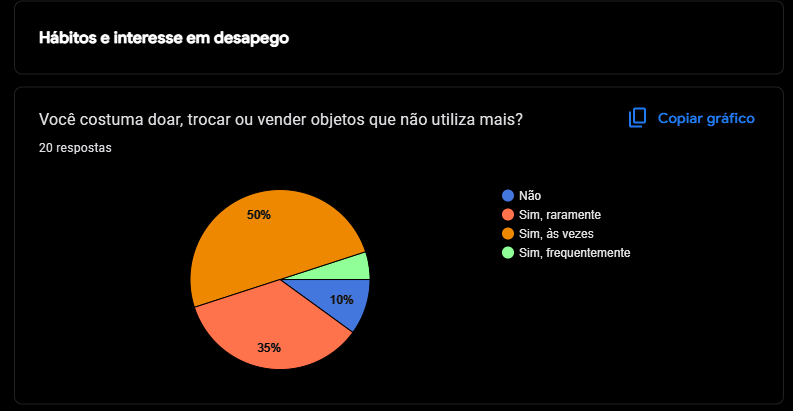 |
| Resposta 5 | Resposta 6 |
|---|---|
| 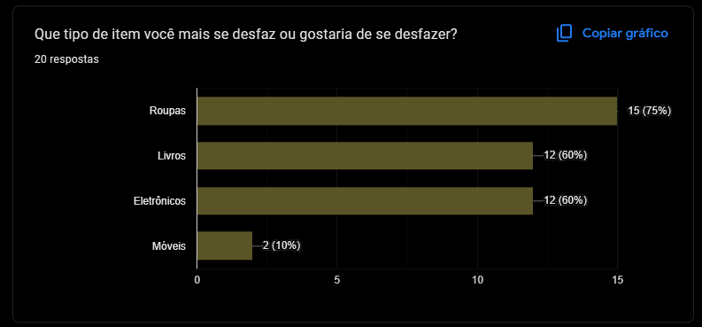 | 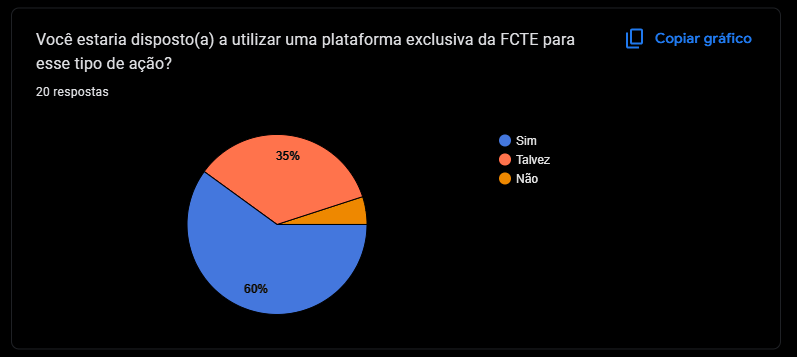 |
| Resposta 7 | Resposta 8 |
|---|---|
| 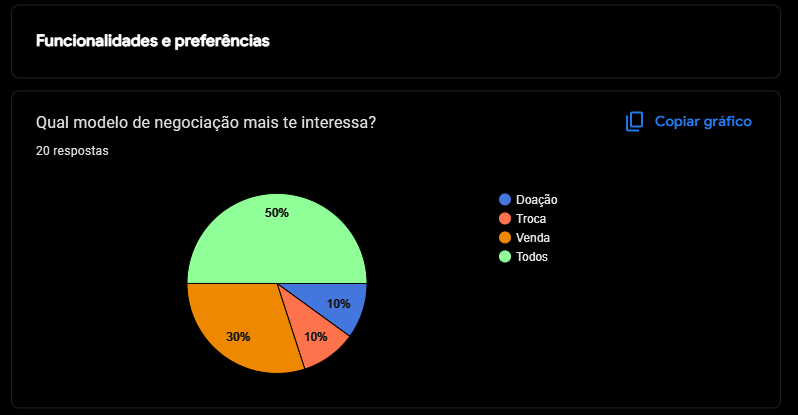 | 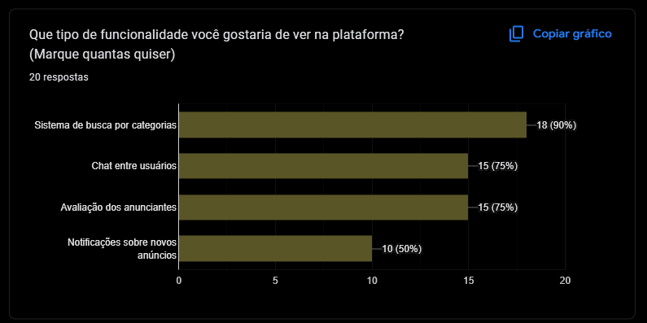 |
| Resposta 9 | Resposta 10 |
|---|---|
| 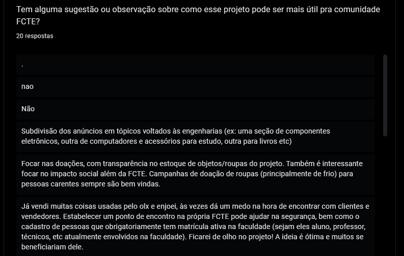 | 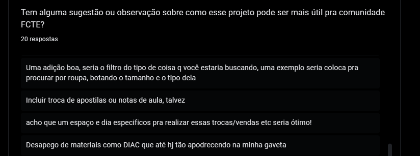 |
| Resposta 11 |
|---|
| 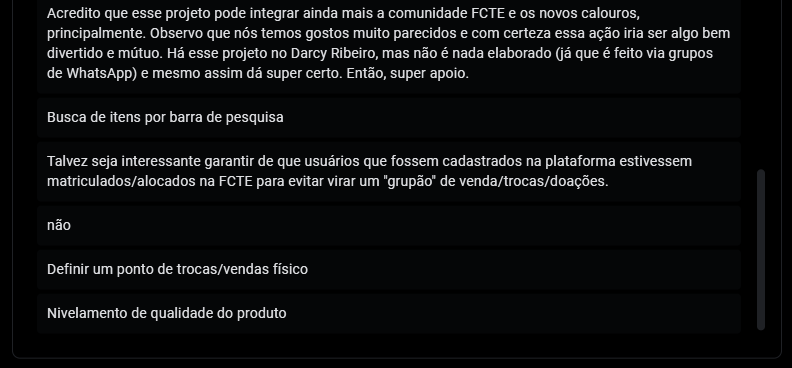 |
Histórico de Versões
| Versão | Data | Descrição | Autor(es) | Revisor(es) |
|---|---|---|---|---|
| 1.0 | 08/04/2025 | Adicionado introdução, objetivo, metodologia e perguntas do questionário | Renata Quadros | Gabriel Monteiro |
| 1.1 | 09/04/2025 | Adicionado respostas do questionário | Gabriel Monteiro |